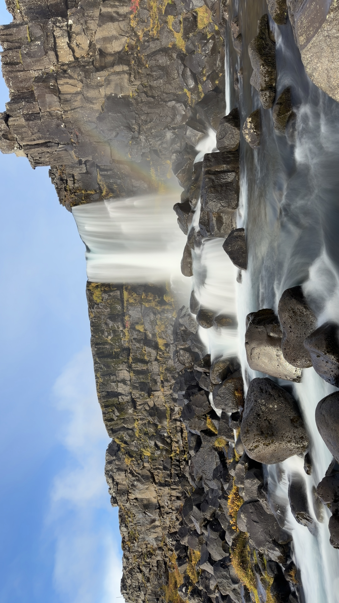

The Fragile Balance of Nature
THINGVELLIR NATIONAL PARK · ICELAND
Hay lugares en la Tierra donde la naturaleza parece pertenecer a otro tiempo. Lugares donde cada acantilado, cada río y cada roca cuentan una historia medida no en años, sino en milenios. El Parque Nacional de Þingvellir es uno de esos rincones excepcionales. Oculto en el famoso Círculo Dorado de Islandia, es un paisaje donde la geología, la historia y la naturaleza conviven para dar forma a uno de los escenarios más extraordinarios del planeta.

Un paisaje que se desgarra lentamente
A primera vista, Þingvellir transmite una sensación de calma absoluta. Los campos de lava cubiertos de musgo se extienden hasta el horizonte, los ríos de aguas cristalinas recorren suavemente el valle y los antiguos acantilados volcánicos emergen de la tierra como si fueran enormes murallas naturales.
Sin embargo, bajo esa aparente tranquilidad actúa una de las fuerzas geológicas más poderosas del planeta. Þingvellir se encuentra sobre la dorsal mesoatlántica, el límite donde las placas tectónicas Norteamericana y Euroasiática se separan lentamente año tras año. A diferencia de la mayoría de los lugares donde estas fronteras permanecen ocultas bajo el océano, aquí el proceso puede contemplarse directamente sobre la superficie terrestre.
El espectacular cañón que define el parque no es simplemente un valle excavado por la erosión. Se trata de un valle de rift, una cicatriz visible en la corteza terrestre creada por la lenta separación de dos continentes. Estar aquí significa encontrarse, literalmente, entre América y Europa al mismo tiempo.
«Pocos lugares del mundo permiten caminar entre dos continentes mientras se contempla cómo el planeta sigue transformándose bajo nuestros pies.»
El río que atraviesa la historia
A través de este paisaje fracturado discurre el río Öxará, uno de los elementos naturales más importantes del parque.
Hoy parece seguir un curso completamente natural por el valle, pero los historiadores creen que fue desviado hace siglos para abastecer de agua a las reuniones que se celebraban en Þingvellir. Desde entonces, sus aguas quedaron estrechamente ligadas a la historia política y cultural de Islandia.
Su cauce cristalino serpentea entre campos de lava y afloramientos rocosos antes de alcanzar uno de los lugares más emblemáticos del parque: la cascada de Öxarárfoss.
Öxarárfoss: donde el agua encuentra la piedra
A diferencia de las grandes cataratas islandesas, Öxarárfoss no destaca por sus dimensiones. Su verdadera grandeza reside en el escenario que la rodea.
La cascada se precipita desde un acantilado de basalto modelado por la actividad volcánica y tectónica, estrellándose sobre un lecho de oscuras rocas. Rodeada de musgo, antiguas coladas de lava y las imponentes paredes del desfiladero de Almannagjá, parece un rincón escondido en el corazón del paisaje.
Con el cambio de las estaciones, Öxarárfoss transforma por completo su aspecto. Durante el invierno se convierte en una escultura de hielo y nieve. En verano, el intenso verdor cubre los campos de lava circundantes, creando un escenario que parece ajeno al paso del tiempo.
{kind=link}

El lugar donde nació una nación
Þingvellir no es solo una maravilla geológica. También es uno de los lugares más importantes de la historia de Islandia.
En el año 930 se estableció aquí el Alþingi, considerado uno de los parlamentos más antiguos del mundo. Cada verano, jefes de clan, comerciantes, granjeros y viajeros se reunían en este valle para resolver disputas, aprobar leyes y decidir el futuro de una nación que apenas comenzaba a tomar forma.
Durante casi nueve siglos, Þingvellir fue el corazón político de Islandia. Entre estos acantilados se tomaron algunas de las decisiones que definieron la identidad del país, entre ellas la adopción oficial del cristianismo alrededor del año 1000.
Hoy, al contemplar el río, resulta imposible no imaginar las innumerables voces que un día resonaron entre estas paredes de roca.
Un equilibrio frágil
La escena capturada en esta fotografía representa mucho más que un hermoso rincón de Islandia.
Es el punto de encuentro entre fuerzas opuestas.
Agua y roca.
Quietud y movimiento.
Creación y destrucción.
El río avanza silenciosamente a través de un paisaje que, literalmente, continúa separándose. Los acantilados parecen eternos, pero siguen desplazándose, aunque sea de forma casi imperceptible, con el paso de los siglos. La naturaleza se muestra aquí poderosa, pero también extraordinariamente frágil.
Quizá sea precisamente eso lo que convierte a Þingvellir en un lugar inolvidable. Un espacio donde la historia quedó escrita sobre la piedra, donde dos continentes siguen alejándose lentamente bajo nuestros pies y donde un río continúa su viaje a través de uno de los paisajes más extraordinarios de la Tierra.
Artículos relacionados
Descubre otro de los grandes paisajes de Islandia en La montaña de las leyendas. Un viaje fotográfico hasta Kirkjufell y la península de Snæfellsnes.
Ficha fotográfica
Ubicación: Parque Nacional de Þingvellir, Islandia
Cámara: iPhone 17 Pro
Filtro: Filtro polarizador circular
Técnica: Larga exposición
Fotógrafo: Carles Torres